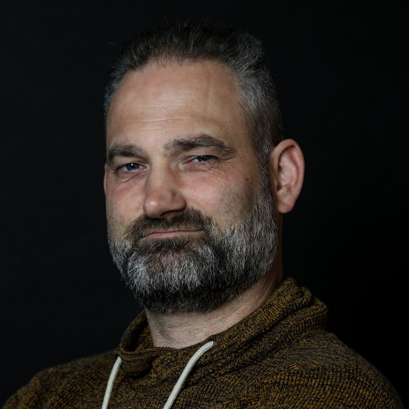
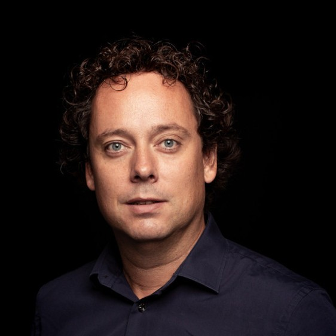

Joy of Coding 2024
Celebrating the art, craft, science and joy of software development
June 21, 2024
Celebrating
Software development
Joy of Coding is a one-day single-track conference held in Rotterdam. We bring internationally renowned speakers to Rotterdam to deliver talks. They cover diverse aspects of the craft, reflecting recent trends in industry and academia, as well as a serious amount of joy.It's affordable
Joy of Coding is a non-profit event. With the help of our sponsors we keep registration fees low to provide the best value-for-money conference of 2024, just like our previous editions!It's by dev, for devs
Joy of Coding is organised by a bunch of developers. There is no commercial agenda, the schedule is purely based on stuff that developers, like us, love to see. Expert speakers but no talking heads. A place where we can all get together and talk about code.
Venue
Joy of Coding 2024 will take place in De Doelen, a concert venue and convention center in Rotterdam. Although mainly known as a venue for classical music and jazz, it is also a superb conference location. The monumental building is located right in front of the Rotterdam Centraal train station.Speakers_

Kevlin Henney
Kevlin is an independent consultant, trainer, speaker and writer.
He helps individuals and teams improve their skills, codebases and cultures, ensuring people have a place in their architecture.
He is co-author of two volumes in the Pattern-Oriented Software Architecture series,
editor of 97 Things Every Programmer Should Know and co-editor of 97 Things Every Java Programmer Should Know.
He lives in Bristol and online.

Michael Pound
Michael Pound is an Associate Professor of Computer Science at the University of Nottingham, UK.
His research focuses on the development and application of computer vision approaches, often to biological images.
He has been involved in interdisciplinary research across a variety of domains, ranging from plant and medical imaging, through to engineering and physics.
Outside of research, he is passionate about education in computer science.
He is a regular contributor to the YouTube channel Computerphile, where his videos on subjects including AI and machine learning have accumulated over 55 million views.

Sara Vieira
Sara is a founding engineer at axo.dev, loves to make things, play old video games and is just an all around nerd.

Yulia Startsev
Yulia Startsev is the JavaScript language lead for the SpiderMonkey compiler at Mozilla.
She served as a chair and is currently a facilitator for Ecma's TC39, the committee responsible for design and development of the JavaScript language.
She initiated and runs the TC39 research group, which applies HCI research techniques to JavaScript language features.
Her interests include programmer psychology, and she hopes that this talk will be interesting as a reflection on how we think and solve problems.
Team_

Alex Kuiper
Alex is an independent software consultant, a VIM nerd, Whovian, runner and model aviation fan. He
heard about this obscure new conference called ‘Joy of Coding’, decided to visit and loved it so much he
kept coming back and ended up joining the team.

Arthur van Leeuwen
Arthur fell in love with computers and code as a kid and has been privileged enough to turn that
love into a career. Bounced around in academia as a programmer and assistant professor for a while, and
now works at Nedap Security, where he gets to code, architect and teach.

Eline Brader, MSc.
Eline got a bachelor and master’s degree in food technology. With noob level knowledge on
programming languages after graduation, Eline was able to fulfil her desire to program on a fulltime
basis thanks to Nedap University. Since May 2022, she is a fulltime backend software developer in team
OpenEHR at Nedap Healthcare. Her long-term dream would be to become a full stack developer. People would
call her crazy for working every day of the week but her response would be: “My job is my hobby and my
hobby is my job”.

Erik Pronk
Erik is a passionate software engineer that has been working in IT since 2001. During this period he
has gained a lot of experience in a variety of technologies, roles, development environments and market
segments.
His main focus is on implementing enterprise solutions in an agile way. In his spare time, Erik loves to
run and experiment with VR and domotics. Erik works at JDriven
where he shares his passion and drive with other colleagues.

Ivo Limmen
Ivo is a Principal Consultant at QSD B.V.
and a Software Engineer for all applications both online and offline.
He is never afraid to learn new things, autodidact and his best friend is DuckDuckGo.

Rob Brinkman
Rob Brinkman is Chief Technology Officer (CTO) of Conflux.
Rob can be described as a result driven, analytical and communicative strong professional whose interest and knowledge focus on
enterprise application development, mobile development, open-source solutions, software architecture and technical project management.